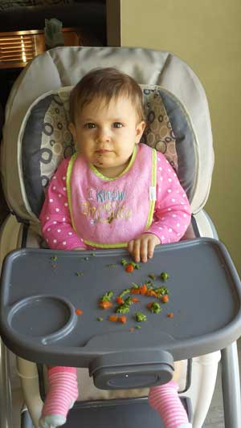

I participate in the USDA child care food program through Day Care Resources. I go above and beyond the minimum food program requirements by serving mostly organic foods free from artificial colors, flavors, and preservatives, and as much as possible, foods free of genetically modified ingredients, hydrogenated oils, and high-fructose corn syrup.
Benefits of cutting out processed food
A real family’s results of cutting highly processed foods out of their diet.
I do not use juice to fulfill fruit and vegetable requirements and the only beverages I serve regularly are water and milk. I try to cook as much as possible from scratch using whole, unprocessed foods. Children have the opportunity to be connected to their food as they occasionally assist with baking and cooking in the kitchen. Continual exposure to foods and involvement in their production and preparation pave the way for life-long healthy eating patterns.
Even with the additional cost of serving mostly organic and unprocessed foods, I am able to keep my rates within the Will County norms for home child cares. Natural and organic foods and household products come at a cost, but I believe the cost of potentially harmful chemicals in our environment and processed foods in our diets is much greater. I want the best for my family and will not give your family and children any less!
